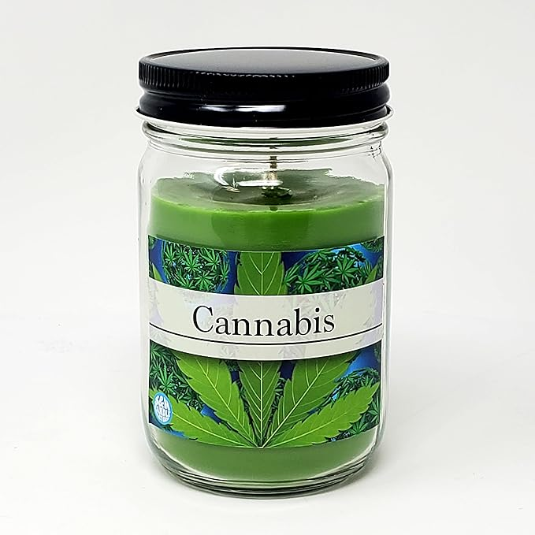

Weed Candle

Weed Candles are a very cool and relaxing thing, they bring the stoner house smell directly in your home, so you can see if you enjoy it, before you actually become a stoner, you will(joke, pls dont be influenced by this)
Ingredients:
- Candle wax, see different types Here
- A wick, see diffrent types Here
- Any jar or thing that can hold the wax and handle the heat
- Something to melt the wax with
- Green candle die
- Weed/Cannabis/Hemp candle scent
How to Make One
- Prepare Ingredients
- Set up jar
- Center wick in jar How?
- Melt wax
- Mix coloring and scent at right temp
- Pour carefully in jar (or whatever you're using)
- Wait about a day
- Done!
Back to Main Page